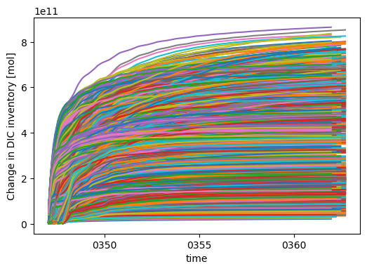

Global IRF Efficiency Map#
Generate global map of CDR efficiency using IRF forcing.
%load_ext autoreload
%autoreload 2
import xarray as xr
import matplotlib.pyplot as plt
from tqdm.notebook import tqdm
import atlas
Define experiment and phase#
cdr_forcing = "DOR"
vintage = "001"
clobber = False
calc = atlas.global_irf_map(cdr_forcing, vintage)
Table of experiments#
calc.df
| blueprint | polygon | polygon_master | basin | start_date | cdr_forcing | cdr_forcing_file | simulation_key | refdate | stop_n | wallclock | curtail_output | |
|---|---|---|---|---|---|---|---|---|---|---|---|---|
| case | ||||||||||||
| smyle.cdr-atlas-v0.control.001 | smyle | NaN | NaN | None | 1999-01 | None | None | baseline | 0347-01-01 | 16 | 12:00:00 | False |
| smyle.cdr-atlas-v0.glb-dor_North_Atlantic_basin_000_1999-01-01_00000.001 | smyle | 0.0 | 0.0 | North_Atlantic_basin | 1999-01 | DOR | /global/cfs/projectdirs/m4746/Projects/OAE-Eff... | glb-dor_North_Atlantic_basin_000_1999-01-01_00000 | 0347-01-01 | 15 | 10:00:00 | True |
| smyle.cdr-atlas-v0.glb-dor_North_Atlantic_basin_000_1999-04-01_00001.001 | smyle | 0.0 | 0.0 | North_Atlantic_basin | 1999-04 | DOR | /global/cfs/projectdirs/m4746/Projects/OAE-Eff... | glb-dor_North_Atlantic_basin_000_1999-04-01_00001 | 0347-04-01 | 15 | 10:00:00 | True |
| smyle.cdr-atlas-v0.glb-dor_North_Atlantic_basin_000_1999-07-01_00002.001 | smyle | 0.0 | 0.0 | North_Atlantic_basin | 1999-07 | DOR | /global/cfs/projectdirs/m4746/Projects/OAE-Eff... | glb-dor_North_Atlantic_basin_000_1999-07-01_00002 | 0347-07-01 | 15 | 10:00:00 | True |
| smyle.cdr-atlas-v0.glb-dor_North_Atlantic_basin_000_1999-10-01_00003.001 | smyle | 0.0 | 0.0 | North_Atlantic_basin | 1999-10 | DOR | /global/cfs/projectdirs/m4746/Projects/OAE-Eff... | glb-dor_North_Atlantic_basin_000_1999-10-01_00003 | 0347-10-01 | 15 | 10:00:00 | True |
| ... | ... | ... | ... | ... | ... | ... | ... | ... | ... | ... | ... | ... |
| smyle.cdr-atlas-v0.glb-dor_Southern_Ocean_038_1999-10-01_02755.001 | smyle | 38.0 | 688.0 | Southern_Ocean | 1999-10 | DOR | /global/cfs/projectdirs/m4746/Projects/OAE-Eff... | glb-dor_Southern_Ocean_038_1999-10-01_02755 | 0347-10-01 | 15 | 10:00:00 | True |
| smyle.cdr-atlas-v0.glb-dor_Southern_Ocean_039_1999-01-01_02756.001 | smyle | 39.0 | 689.0 | Southern_Ocean | 1999-01 | DOR | /global/cfs/projectdirs/m4746/Projects/OAE-Eff... | glb-dor_Southern_Ocean_039_1999-01-01_02756 | 0347-01-01 | 15 | 10:00:00 | True |
| smyle.cdr-atlas-v0.glb-dor_Southern_Ocean_039_1999-04-01_02757.001 | smyle | 39.0 | 689.0 | Southern_Ocean | 1999-04 | DOR | /global/cfs/projectdirs/m4746/Projects/OAE-Eff... | glb-dor_Southern_Ocean_039_1999-04-01_02757 | 0347-04-01 | 15 | 10:00:00 | True |
| smyle.cdr-atlas-v0.glb-dor_Southern_Ocean_039_1999-07-01_02758.001 | smyle | 39.0 | 689.0 | Southern_Ocean | 1999-07 | DOR | /global/cfs/projectdirs/m4746/Projects/OAE-Eff... | glb-dor_Southern_Ocean_039_1999-07-01_02758 | 0347-07-01 | 15 | 10:00:00 | True |
| smyle.cdr-atlas-v0.glb-dor_Southern_Ocean_039_1999-10-01_02759.001 | smyle | 39.0 | 689.0 | Southern_Ocean | 1999-10 | DOR | /global/cfs/projectdirs/m4746/Projects/OAE-Eff... | glb-dor_Southern_Ocean_039_1999-10-01_02759 | 0347-10-01 | 15 | 10:00:00 | True |
2761 rows × 12 columns
Validate the integrations#
calc.df_case_status
| build | submitted | run_completed | archive | error | error_count | timestamp_run | JobId | JobState | Queued | yr_per_day | pe-hr_per_yr | |
|---|---|---|---|---|---|---|---|---|---|---|---|---|
| case | ||||||||||||
| smyle.cdr-atlas-v0.control.001 | True | True | True | True | False | 0 | 2024-11-04 23:44:49 | None | None | False | 45.61 | 471.47 |
| smyle.cdr-atlas-v0.glb-dor_North_Atlantic_basin_000_1999-01-01_00000.001 | True | True | True | True | False | 0 | 2024-11-05 03:13:08 | None | None | False | 58.82 | 365.62 |
| smyle.cdr-atlas-v0.glb-dor_North_Atlantic_basin_000_1999-04-01_00001.001 | True | True | True | True | False | 0 | 2024-11-05 03:12:00 | None | None | False | 59.00 | 364.49 |
| smyle.cdr-atlas-v0.glb-dor_North_Atlantic_basin_000_1999-07-01_00002.001 | True | True | True | True | False | 0 | 2024-11-04 20:27:38 | None | None | False | 58.89 | 365.17 |
| smyle.cdr-atlas-v0.glb-dor_North_Atlantic_basin_000_1999-10-01_00003.001 | True | True | True | True | False | 0 | 2024-11-04 21:37:34 | None | None | False | 58.94 | 364.83 |
| ... | ... | ... | ... | ... | ... | ... | ... | ... | ... | ... | ... | ... |
| smyle.cdr-atlas-v0.glb-dor_Southern_Ocean_038_1999-10-01_02755.001 | True | True | True | True | False | 0 | 2025-03-13 04:44:19 | None | None | False | 55.20 | 389.56 |
| smyle.cdr-atlas-v0.glb-dor_Southern_Ocean_039_1999-01-01_02756.001 | True | True | True | True | False | 0 | 2025-03-13 04:40:44 | None | None | False | 55.71 | 385.98 |
| smyle.cdr-atlas-v0.glb-dor_Southern_Ocean_039_1999-04-01_02757.001 | True | True | True | True | False | 0 | 2025-03-13 04:39:37 | None | None | False | 55.95 | 384.32 |
| smyle.cdr-atlas-v0.glb-dor_Southern_Ocean_039_1999-07-01_02758.001 | True | True | True | True | False | 0 | 2025-03-13 04:33:59 | None | None | False | 56.92 | 377.78 |
| smyle.cdr-atlas-v0.glb-dor_Southern_Ocean_039_1999-10-01_02759.001 | True | True | True | True | False | 0 | 2025-03-18 03:40:09 | None | None | False | 56.86 | 378.18 |
2761 rows × 12 columns
%%time
calc.validate(clobber=clobber)
CPU times: user 1min 5s, sys: 9.64 s, total: 1min 14s
Wall time: 3min 34s
df = calc.df_validation
df
| is_cdr_run | ALK_ALT_CO2_rmse | ALK_rmse | DIC_ALT_CO2_rmse | DIC_rmse | DOC_rmse | DOCr_rmse | DON_rmse | DONr_rmse | DOP_rmse | ... | diazC_rmse | diazChl_rmse | diazFe_rmse | diazP_rmse | spC_rmse | spCaCO3_rmse | spChl_rmse | spFe_rmse | spP_rmse | zooC_rmse | |
|---|---|---|---|---|---|---|---|---|---|---|---|---|---|---|---|---|---|---|---|---|---|
| case | |||||||||||||||||||||
| smyle.cdr-atlas-v0.control.001 | False | 0.224847 | 0.224846 | 0.325688 | 0.304365 | 0.045923 | 0.011091 | 0.004066 | 0.000207 | 0.000238 | ... | 0.000601 | 0.000147 | 4.014262e-08 | 0.000005 | 0.025289 | 0.005248 | 0.003786 | 6.857399e-07 | 0.000216 | 0.010324 |
| smyle.cdr-atlas-v0.glb-dor_North_Atlantic_basin_000_1999-01-01_00000.001 | True | 0.230523 | NaN | 0.336078 | NaN | NaN | NaN | NaN | NaN | NaN | ... | NaN | NaN | NaN | NaN | NaN | NaN | NaN | NaN | NaN | NaN |
| smyle.cdr-atlas-v0.glb-dor_North_Atlantic_basin_000_1999-04-01_00001.001 | True | 0.270639 | NaN | 0.315976 | NaN | NaN | NaN | NaN | NaN | NaN | ... | NaN | NaN | NaN | NaN | NaN | NaN | NaN | NaN | NaN | NaN |
| smyle.cdr-atlas-v0.glb-dor_North_Atlantic_basin_000_1999-07-01_00002.001 | True | 0.225976 | NaN | 0.302304 | NaN | NaN | NaN | NaN | NaN | NaN | ... | NaN | NaN | NaN | NaN | NaN | NaN | NaN | NaN | NaN | NaN |
| smyle.cdr-atlas-v0.glb-dor_North_Atlantic_basin_000_1999-10-01_00003.001 | True | 0.288906 | NaN | 0.368662 | NaN | NaN | NaN | NaN | NaN | NaN | ... | NaN | NaN | NaN | NaN | NaN | NaN | NaN | NaN | NaN | NaN |
| ... | ... | ... | ... | ... | ... | ... | ... | ... | ... | ... | ... | ... | ... | ... | ... | ... | ... | ... | ... | ... | ... |
| smyle.cdr-atlas-v0.glb-dor_Southern_Ocean_038_1999-10-01_02755.001 | True | 0.286924 | NaN | 0.350337 | NaN | NaN | NaN | NaN | NaN | NaN | ... | NaN | NaN | NaN | NaN | NaN | NaN | NaN | NaN | NaN | NaN |
| smyle.cdr-atlas-v0.glb-dor_Southern_Ocean_039_1999-01-01_02756.001 | True | 0.232214 | NaN | 0.273196 | NaN | NaN | NaN | NaN | NaN | NaN | ... | NaN | NaN | NaN | NaN | NaN | NaN | NaN | NaN | NaN | NaN |
| smyle.cdr-atlas-v0.glb-dor_Southern_Ocean_039_1999-04-01_02757.001 | True | 0.296765 | NaN | 0.439302 | NaN | NaN | NaN | NaN | NaN | NaN | ... | NaN | NaN | NaN | NaN | NaN | NaN | NaN | NaN | NaN | NaN |
| smyle.cdr-atlas-v0.glb-dor_Southern_Ocean_039_1999-07-01_02758.001 | True | 0.278215 | NaN | 0.286267 | NaN | NaN | NaN | NaN | NaN | NaN | ... | NaN | NaN | NaN | NaN | NaN | NaN | NaN | NaN | NaN | NaN |
| smyle.cdr-atlas-v0.glb-dor_Southern_Ocean_039_1999-10-01_02759.001 | True | 0.269060 | NaN | 0.324089 | NaN | NaN | NaN | NaN | NaN | NaN | ... | NaN | NaN | NaN | NaN | NaN | NaN | NaN | NaN | NaN | NaN |
2761 rows × 40 columns
df.ALK_ALT_CO2_rmse.plot.hist(bins=20)
<Axes: ylabel='Frequency'>
df.DIC_ALT_CO2_rmse.plot.hist(bins=20)
<Axes: ylabel='Frequency'>
df.FG_ALT_CO2_rmse.plot.hist(bins=20)
<Axes: ylabel='Frequency'>
Analysis#
calc.analyze(clobber=False)
calc.df_analysis
| zarr_path | |
|---|---|
| case | |
| smyle.cdr-atlas-v0.glb-dor_North_Atlantic_basin_000_1999-01-01_00000.001 | /global/cfs/projectdirs/m4746/Projects/Ocean-C... |
| smyle.cdr-atlas-v0.glb-dor_North_Atlantic_basin_000_1999-04-01_00001.001 | /global/cfs/projectdirs/m4746/Projects/Ocean-C... |
| smyle.cdr-atlas-v0.glb-dor_North_Atlantic_basin_000_1999-07-01_00002.001 | /global/cfs/projectdirs/m4746/Projects/Ocean-C... |
| smyle.cdr-atlas-v0.glb-dor_North_Atlantic_basin_000_1999-10-01_00003.001 | /global/cfs/projectdirs/m4746/Projects/Ocean-C... |
| smyle.cdr-atlas-v0.glb-dor_North_Atlantic_basin_001_1999-01-01_00004.001 | /global/cfs/projectdirs/m4746/Projects/Ocean-C... |
| ... | ... |
| smyle.cdr-atlas-v0.glb-dor_Southern_Ocean_038_1999-10-01_02755.001 | /global/cfs/projectdirs/m4746/Projects/Ocean-C... |
| smyle.cdr-atlas-v0.glb-dor_Southern_Ocean_039_1999-01-01_02756.001 | /global/cfs/projectdirs/m4746/Projects/Ocean-C... |
| smyle.cdr-atlas-v0.glb-dor_Southern_Ocean_039_1999-04-01_02757.001 | /global/cfs/projectdirs/m4746/Projects/Ocean-C... |
| smyle.cdr-atlas-v0.glb-dor_Southern_Ocean_039_1999-07-01_02758.001 | /global/cfs/projectdirs/m4746/Projects/Ocean-C... |
| smyle.cdr-atlas-v0.glb-dor_Southern_Ocean_039_1999-10-01_02759.001 | /global/cfs/projectdirs/m4746/Projects/Ocean-C... |
2760 rows × 1 columns
import warnings
warnings.filterwarnings("error")
fig, ax = plt.subplots(1, 1, figsize=(6, 4))
for row_data in tqdm(calc.df_analysis.iterrows()):
case = row_data[0]
path_zarr = row_data[1].iloc[0]
try:
ds = xr.open_zarr(path_zarr, decode_timedelta=False)
da = ds["DIC_ADD_TOTAL"]
if ds.time.values[0].year > 500:
print(f"bad time:\n\t{case}\n\t{path_zarr}")
except:
print(f"FAILED\n\t{case}\n\t{path_zarr}")
raise
da.plot(ax=ax, label=case)

Visualization#
#calc.visualize(clobber=True)
df = calc.df_case_status
df
| build | submitted | run_completed | archive | error | error_count | timestamp_run | JobId | JobState | Queued | yr_per_day | pe-hr_per_yr | |
|---|---|---|---|---|---|---|---|---|---|---|---|---|
| case | ||||||||||||
| smyle.cdr-atlas-v0.control.001 | True | True | True | True | False | 0 | 2024-11-04 23:44:49 | None | None | False | 45.61 | 471.47 |
| smyle.cdr-atlas-v0.glb-dor_North_Atlantic_basin_000_1999-01-01_00000.001 | True | True | True | True | False | 0 | 2024-11-05 03:13:08 | None | None | False | 58.82 | 365.62 |
| smyle.cdr-atlas-v0.glb-dor_North_Atlantic_basin_000_1999-04-01_00001.001 | True | True | True | True | False | 0 | 2024-11-05 03:12:00 | None | None | False | 59.00 | 364.49 |
| smyle.cdr-atlas-v0.glb-dor_North_Atlantic_basin_000_1999-07-01_00002.001 | True | True | True | True | False | 0 | 2024-11-04 20:27:38 | None | None | False | 58.89 | 365.17 |
| smyle.cdr-atlas-v0.glb-dor_North_Atlantic_basin_000_1999-10-01_00003.001 | True | True | True | True | False | 0 | 2024-11-04 21:37:34 | None | None | False | 58.94 | 364.83 |
| ... | ... | ... | ... | ... | ... | ... | ... | ... | ... | ... | ... | ... |
| smyle.cdr-atlas-v0.glb-dor_Southern_Ocean_038_1999-10-01_02755.001 | True | True | True | True | False | 0 | 2025-03-13 04:44:19 | None | None | False | 55.20 | 389.56 |
| smyle.cdr-atlas-v0.glb-dor_Southern_Ocean_039_1999-01-01_02756.001 | True | True | True | True | False | 0 | 2025-03-13 04:40:44 | None | None | False | 55.71 | 385.98 |
| smyle.cdr-atlas-v0.glb-dor_Southern_Ocean_039_1999-04-01_02757.001 | True | True | True | True | False | 0 | 2025-03-13 04:39:37 | None | None | False | 55.95 | 384.32 |
| smyle.cdr-atlas-v0.glb-dor_Southern_Ocean_039_1999-07-01_02758.001 | True | True | True | True | False | 0 | 2025-03-13 04:33:59 | None | None | False | 56.92 | 377.78 |
| smyle.cdr-atlas-v0.glb-dor_Southern_Ocean_039_1999-10-01_02759.001 | True | True | True | True | False | 0 | 2025-03-18 03:40:09 | None | None | False | 56.86 | 378.18 |
2761 rows × 12 columns